Home
About
Donate
Events
Contact
Profile
Upcoming Events
S.No
Event Name
Date
Venue
1
Chaithra
12/04/2023
SAC bulding
2
Pramida
10/10/2023
Academic Block
3
Vasishta
12/12/2023
HHO Block
4
Harivillu
11/01/2024
ECE Block
Chaithra
The concept of time and movement of the sun and moon came into existence on this day. Hence, festivals like Gudi Padwa, Ugadi and Cheti Chand takes place on this day. Vedic learning commences from this day, according to our scriptures. Therefore, reading Vedic literature like Bhagavad Gita, Sunderkand, and Ramayana during this month is sacred.Teaching children to care about others is an important life lesson. When children watch you give, they will grow up knowing that giving back is the right thing to do and follow in your footsteps. So, donating to charity also helps you be a good role model for your kids.
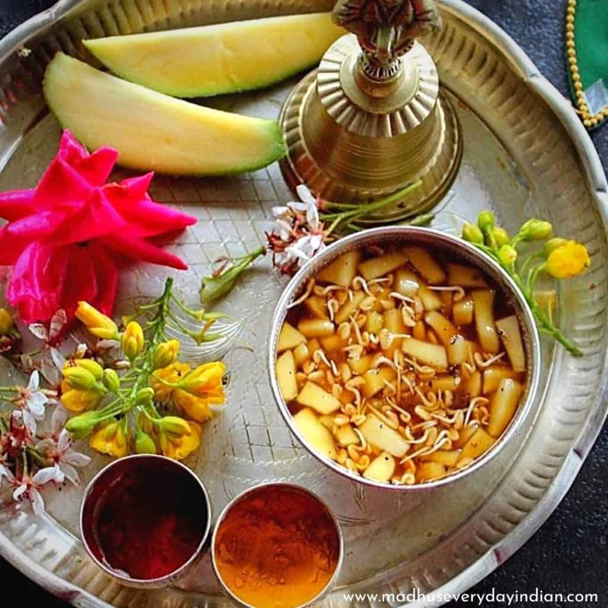 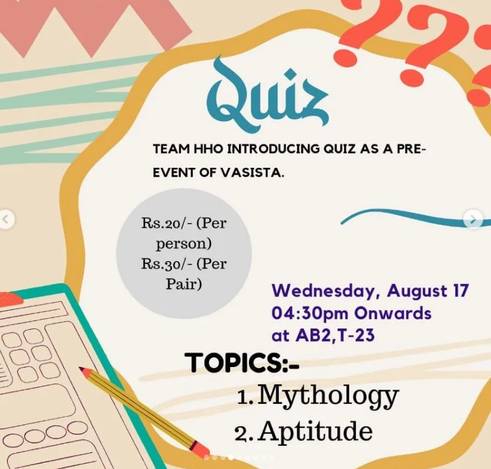 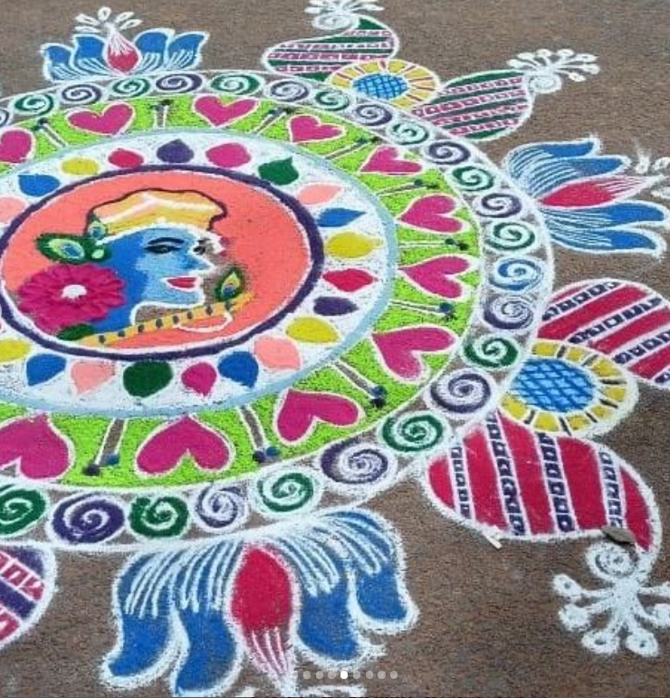 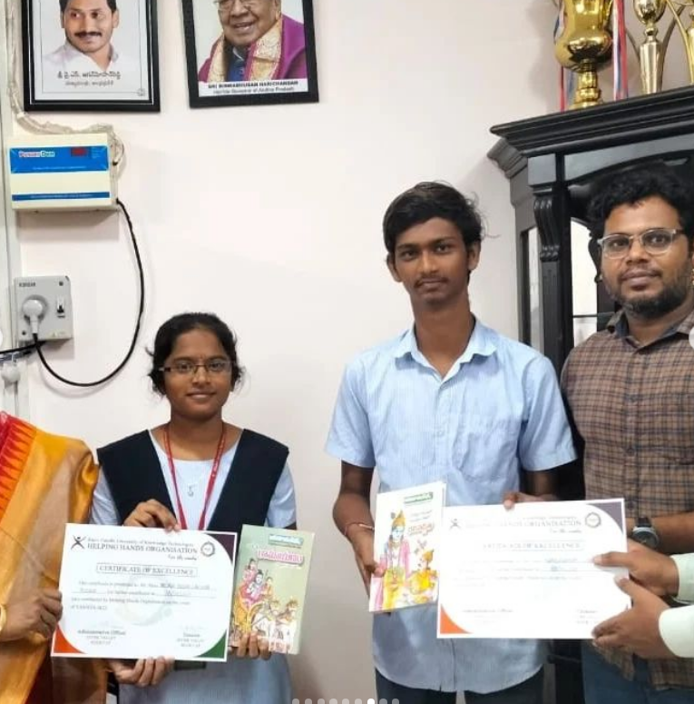
Pramida
Diwali, or
Dipawali
, is India's biggest and most important holiday of the year. The festival gets its name from the row (avali) of clay lamps (deepa) that Indians light outside their homes to symbolize the inner light that protects from spiritual darkness.Several mythological and cultural references lay the background of Diwali as the important devotional festival, being celebrated with utmost adherences and rituals. Spotless cleaning at homes and around surroundings is undertaken during Diwali, with people taking care of decorating their homes with colorful light bulbs and diya lamps. It is believed that on Diwali Mata Laxmi roams the earth and is pleased to enter into a home that is decorated with diya lamps and well-cleaned.
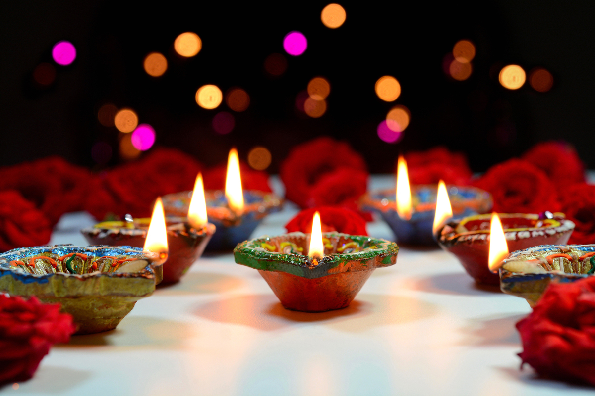 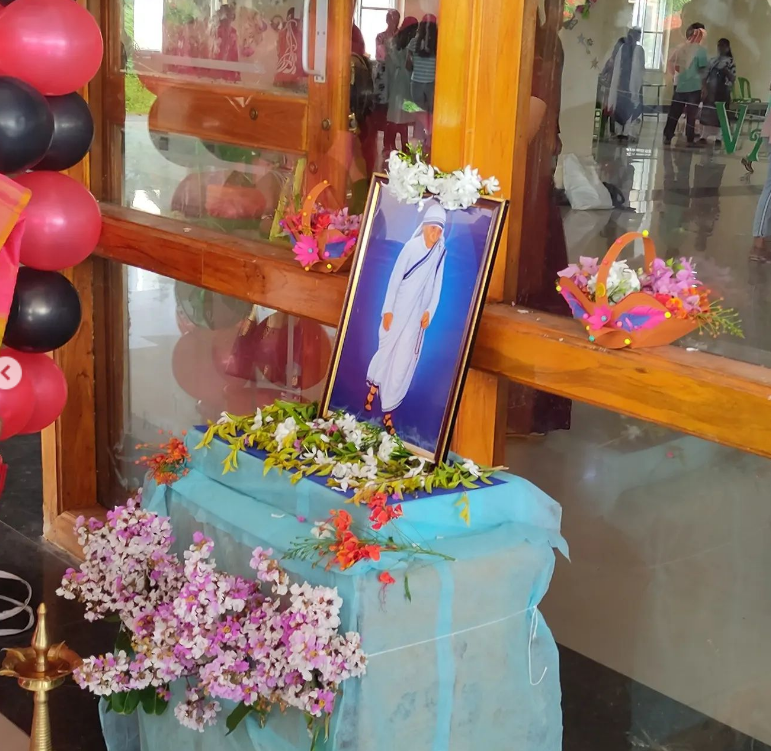 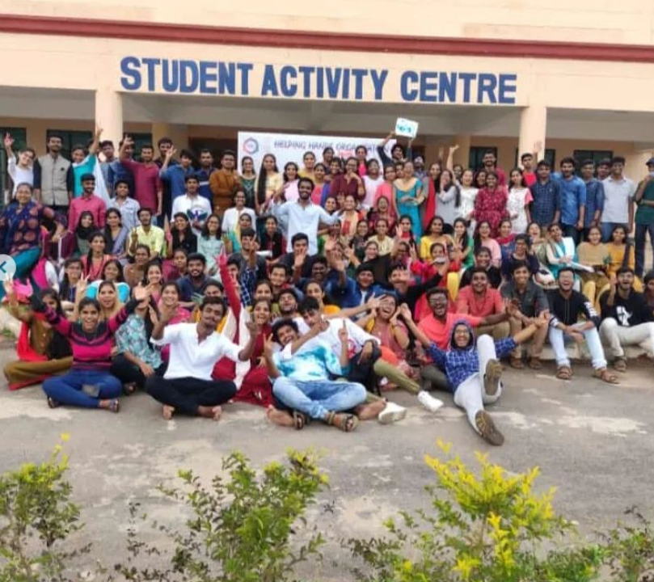 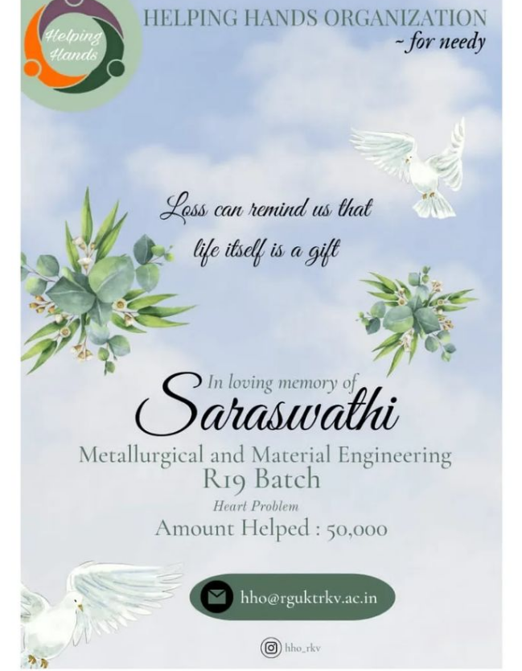
Vasishta
Krishna Jayanthi Recipes-Janmashtami Special Recipes (Gokulashtami) August 10, 2013 by PadhuSankar 22 Comments Krishna Jayanthi also know as Sree Jayanthi or Gokulashtami or Janmashtami or Krishnashtami is celebrated to mark the birth anniversary of Lord Krishna. The main dishes prepared for Krishna Jayanthi are Thattai, seedai (both salted and sweet version) murukku and aval payasam. I have compiled all the important recipes in one place to make festival cooking easier for all the people out there who celebrate the festival. Find a list of easy and delicious recipes below- All the recipe are tried and tested recipes, so you can try it with confidence.
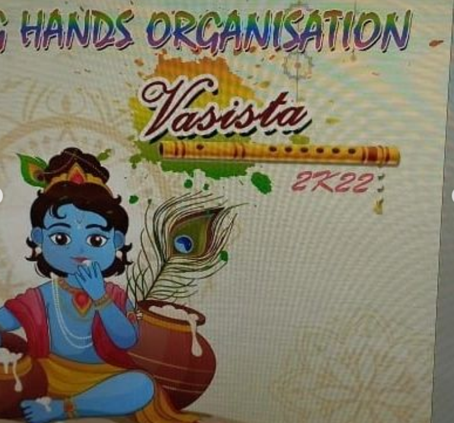 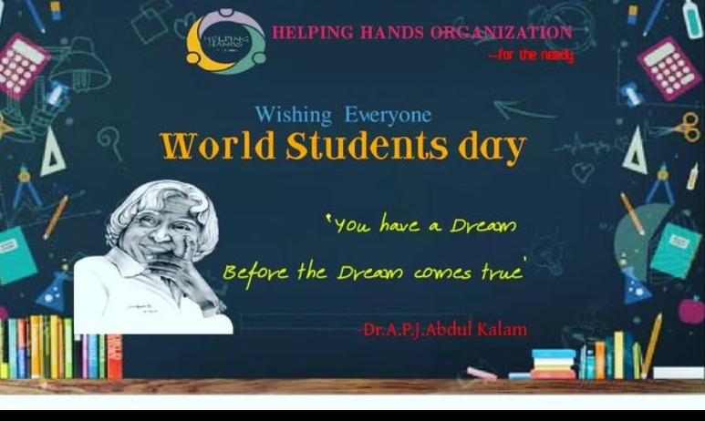 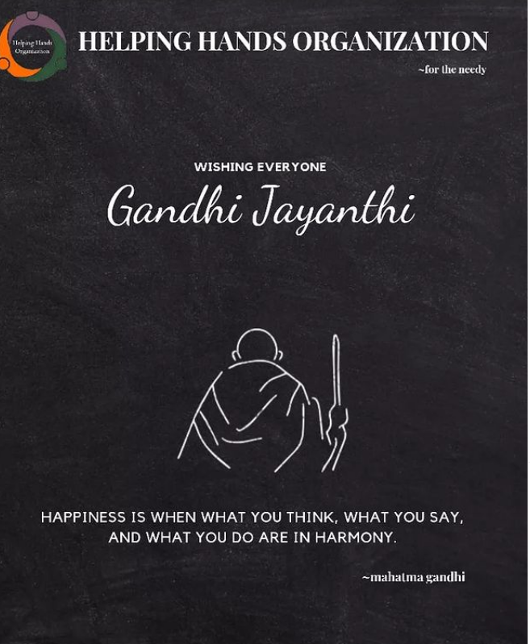
Harivillu
Makar Sankranti is the first major festival to be celebrated in India and usually takes place in January, this year the festival will be celebrated on January 14. Makar Sankranti is a major harvest festival celebrated by Hindus across India, however different states celebrated the festival under different names, traditions and festivities. Makar Sankranti marks the end of winter as well as the beginning of longer days on account of the sun's northward journey, this period is also known as Uttarayan on this account and is considered to be very auspicious. The harvest festival is both a religious as well as seasonal observance, and is dedicated to Lord Surya, the Sun God and marks the sun's transit into Makara (Capricorn) raashi (zodiac sign). The festival is majorly celebrated in the Indian Subcontinent and also by Indians and Hindus around the world.
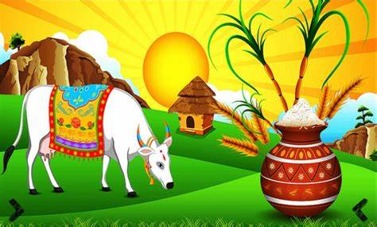 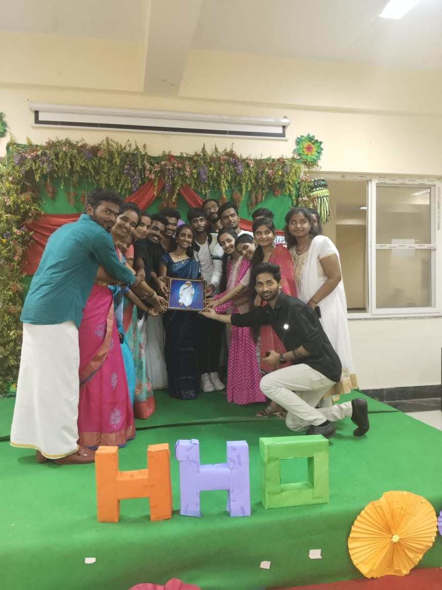 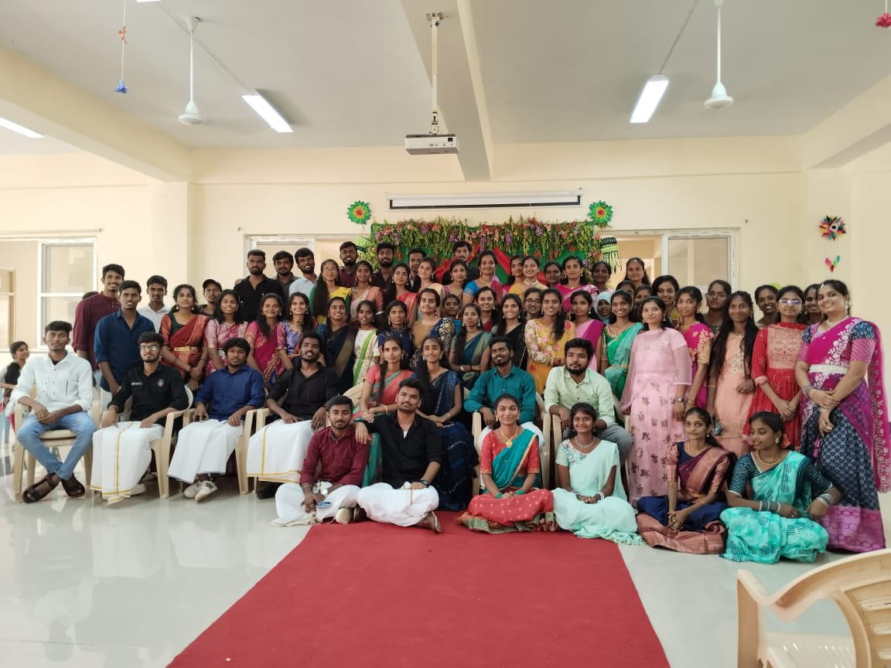